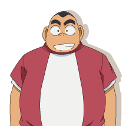
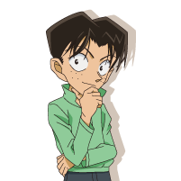
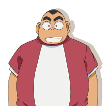
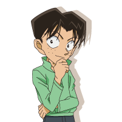

少年侦探团
少年侦探团
少年侦探团为日本动漫《名侦探柯南》中的侦探团体，成员为5名一年级学生，小岛元太自封为团长。另有阿笠博士担任协助，班主任小林澄子担任顾问（自封）。原型为江户川乱步小说中侦探明智小五郎手下培养的少年侦探团（另一说是福尔摩斯身边由流浪儿组成的侦探小队）。
少年侦探团（又译“少年侦探队”）是日本动漫《名侦探柯南》中的一个侦探团体。由帝丹小学1年B班的5名小学生组成。
因受转学生江户川柯南（真实身份为高中生侦探工藤新一）的影响，以小岛元太为首组织了该团，“少年侦探团”为该团名号，成员为小岛元太、吉田步美、圆谷光彦、江户川柯南4人，元太自称为团长。后来转学生灰原哀（真实身份为黑衣组织的科学家宫野志保）也受邀加入其中。阿笠博士担任协助，提供技术和后勤保障。帝丹小学1年B班的班主任小林澄子则自称为侦探团的“顾问”（江户川乱步笔下的少年侦探团的团长就是小林少年）。
委托人向少年侦探团进行委托调查的方式是向元太在学校的鞋箱中放置委托信，或直接当面委托。但多数情况下侦探团是自行出动，去解决事件或单纯是他们认为有问题的事件，后者时常会以乌龙收场。
虽然名义上说他们可以解决各种疑难事件，但是实际上接受委托大多是寻找小猫小狗等无聊小事，不过有时此类小事也发展为寻人或杀人案。此外还经历过几次寻宝、探险事件。曾多次陷入过危险的处境，幸好最后都靠柯南的智慧安然脱险。
少年侦探团因曾多次独立或协助日本警方解决各色疑难案件，在日本警界有些声誉。在社会上（作品虚构的社会背景中）也具有一定的影响力：警视厅曾请侦探团担任儿童防范项目宣传册的代言人；日卖电视台中冲野洋子所在的节目组也欲邀请少年侦探团进行访谈，但最后阴差阳错地被拒绝。
该团的象征性物品和联络物是侦探徽章，由阿笠博士发明，可以进行通话和通信，由电池提供动力。
除了柯南、灰原两位实际心理年龄已是成年阶层的成员之外，光彦、步美、元太这三位真正的一年级小学生也靠过自己的能力侦破了一些较难的案件。在遇到紧急情况或趋势难测的危险时，他们也能保持相当的镇定，并在柯南的浅显点拨或协助下突破困境（重要领导者和解决是光彦）。由此可以看出这些把自己装成侦探的小学生也是具有实质能力与相当潜力，是同龄人中的优秀者。
在《名侦探柯南》的目前剧情发展中，少年侦探团并未真正涉及过以黑衣组织、FBI、CIA为背景的主线剧情。在考虑到另三位成员的真实年龄与能力问题上，柯南很谨慎地避免他们与危险的对手直面对战。
 


